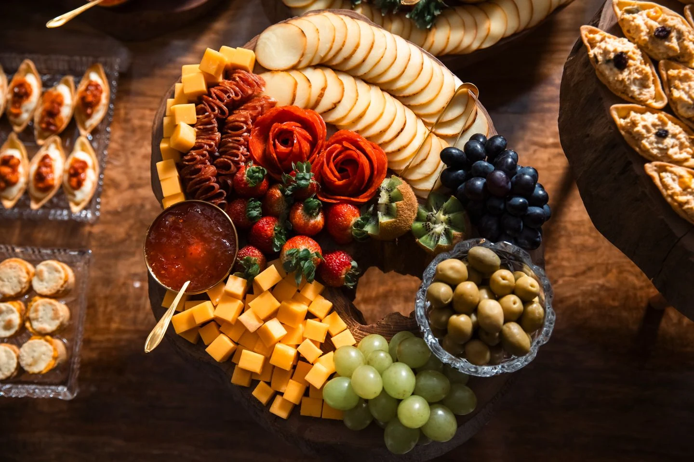
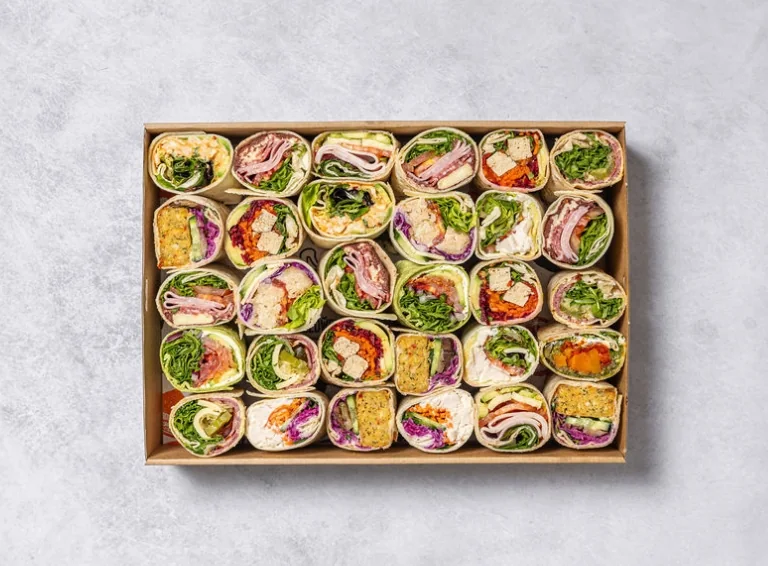

Breakfast catering
For early arrivals, working breakfasts, and morning meeting breaks. Discuss food, coffee, and your service window.
View sample selectionsA MENU THAT FITS THE MOMENT
Explore breakfast, sandwiches, sliders, corporate lunches, and buffet selections. We’ll tailor the menu to your guests, timing, and budget.
Request a catering quote
CONSIDERED FROM THE START
Explore the sample dishes below for the way you gather. Your proposal brings together the selections, portions, service, and pricing for your occasion.
EXPLORE THE POSSIBILITIES
A welcoming direction for morning meetings and refreshment breaks.

A practical format for delivered meals and working lunches.
BOARDS & SHARED TABLES
Explore the presentation, occasion, and practical details behind a shared grazing table.
Explore grazing →START WITH WHAT MATTERS
Request current options for your date. Dishes, availability, portions, and pricing are confirmed in a proposal.
Breakfast, a working lunch, a shared grazing spread, or a reception.
Head count, allergies, dietary preferences, and whether this is a snack or a meal.
Delivery, setup, shared presentation, individual meals, or staffed service.
PRACTICAL PLANNING
Read the lead times, service arrangements, and booking terms before you inquire.
Ordering, delivery & booking termsBoxed lunches and drop-off meals for fewer than 50 people need 2 business days; groups of 50–150 need 5 business days. Meeting catering with setup or staff needs 7 days. Delivery orders start at 10 people. Rush requests depend on availability and carry a 20% fee.
Delivery is scheduled 30 minutes before your start time. Setup with chafers and display is $75–$125, depending on size. We set up and label the food; moving furniture, audiovisual support, and cleanup require a staffed-service booking. Delivery pricing is confirmed in your proposal.
We serve metro Atlanta. Locations outside metro Atlanta are quoted separately. Share your venue or city in the initial inquiry so we can confirm the arrangements.
Share requested meal counts and allergies when ordering. Each boxed meal is labelled with the person’s name or diet type and the major allergens it contains. Meals are prepared in a shared kitchen; we cannot guarantee allergen-free food.
Corporate one-time orders are paid by card at ordering; approved repeat accounts may use Net 15 invoicing. Government agencies may use purchase card or Net 30 with a purchase order. Events and bar service require a 50% deposit, with the balance due 7 days before.
SOUTHERN CRESCENT HOSPITALITY
A CLOSER LOOK


